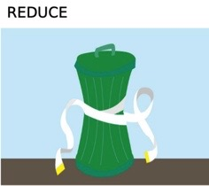
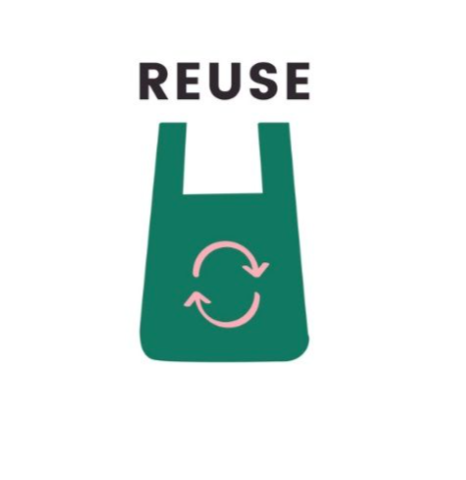
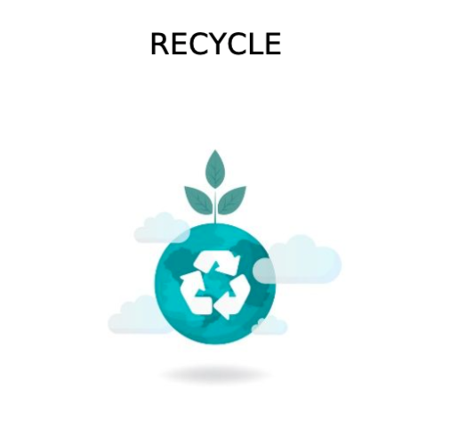

Recycling is one of the best ways for you to have a positive impact on the world in which we live. Recycling is important to both the natural environment and us. We must act fast as the amount of waste we create is increasing all the time. Recycling is very important as waste hasa huge negative impact on the natural environment.Harmful chemicals and greenhouse gasses are released from rubbish in landfill sites. Recycling helps to reduce the pollution caused by waste. Also, habitat destruction and global warming are some the affects caused by deforestation. Recycling reduces the need for raw materials so that the rainforests can be preserved.Huge amounts of energy are used when making products from raw materials. Recycling requires much less energy and therefore helps to preserve natural resources.
Here are some interesting facts to show you why recycling is important:
1 recycled tin can would save enough energy to power a television for 3 hours.
1 recycled glass bottle would save enough energy to power a computer for 25 minutes.
1 recycled plastic bottle would save enough energy to power a 60-watt light bulb for 3 hours.
70% less energy is required to recycle paper compared with making it from raw materials.



REDUCE:
While it's important to recycle the plastics that we do use, it's better to reduce the amount webuy altogether. Here are our tips for reducing your plastic usage:
Buy a reusable water bottle rather than single-use ones.
Avoid takeaway coffee cups - most coffee shops will fill up a reusable cup for you instead.
If you can, support local zero-waste supermarkets or shops that let you refill your own containers with dry groceries such as pasta and rice.
When you have the choice, opt for loose produce at the supermarket.
REUSE:
Many items found around the home can be used for different purposes. So before you throw those items away, think about how they can be reused. Below are some suggestions of how toreuse those everyday bits and pieces:
Carrier bags can be reused in the shops or as bin bags around the house.
By cleaning glass jars and small pots, you can use them as small containers to store odds and ends.
Donate Old Clothes and BooksOther people can reuse your unwanted clothes and books when you donate them to charity shops.
Build a Compost BinYou can reuse many waste items, such as eggshells and old tea bags, using a compost bin. This waste then degrades and turns into compost that can be used to help your garden grow.
RECYCLE:
Recycling in and around the home can be easy when you know how. By thinking carefully about what products you buy atthe supermarket and how to recycle them is the first step towards efficient recycling.
Find ways of recycling different materials. Many materials can be recycled, such as paper, plastic, metal and glass. Other items such as furniture, electronic equipment, building material and vehicles can also be recycled but many people don't often think to do so.
Buy products that can be recycled.When shopping at the supermarket, buy products that can be recycled easily such as glass jars and tin cans.
Make sure you have a recycle bin in your home. Keep it in an obvious place so you won't forget to use it. Your local council should be able to provide you with a recycle bin that can be used for materials such as glass, paper, aluminium and plastic.